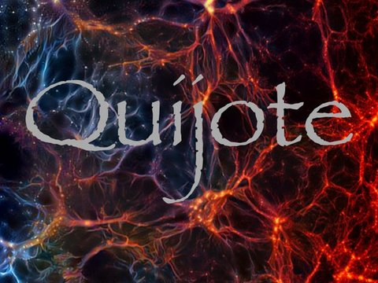
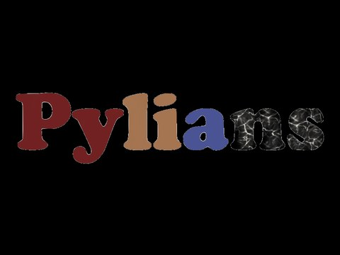

Quijote
A suite of 88,000 N-body simulations spanning more than 7,000 cosmological models. At a single redshift, the simulations contain trillions of particles over a combined volume many times larger than the observable Universe. Billions of halos and voids have been identified and millions of summary statistics computed. More than 50 million CPU hours were needed to run the simulations, and the petabyte of data is publicly available.
CAMELS
More than 17,000 simulations: over 9,800 state-of-the-art (magneto-)hydrodynamic simulations run with 8 different codes and subgrid models (IllustrisTNG, SIMBA, Astrid, Magneticum, EAGLE, CROCODILE, Obsidian, and others), and more than 7,200 N-body simulations. They span thousands of cosmological and astrophysical models, varying the cosmological parameters and the parameters controlling stellar and AGN feedback (up to 35 parameters in the latest sets).

DREAMS
DaRk mattEr with AI and siMulationS. Thousands of N-body and hydrodynamic simulations, including cosmological boxes and zoom-in simulations of Milky Way-like and dwarf galaxies, with different dark matter models (cold, warm, ETHOS, and atomic dark matter) and different supernova and black-hole feedback efficiencies. It combines astrophysics, particle physics and machine learning to shed light on the nature of dark matter.
Denario
A modular, open-source multi-agent AI system designed to be a scientific research assistant. Denario can generate research ideas, check the literature, develop research plans, write and execute code, and write and review papers.

Pylians
Python libraries, written in Python, Cython and C, to analyze N-body and hydrodynamic simulations: density fields, power spectra, bispectra, correlation functions, populating halos with galaxies, neutral hydrogen, images and movies, and more.